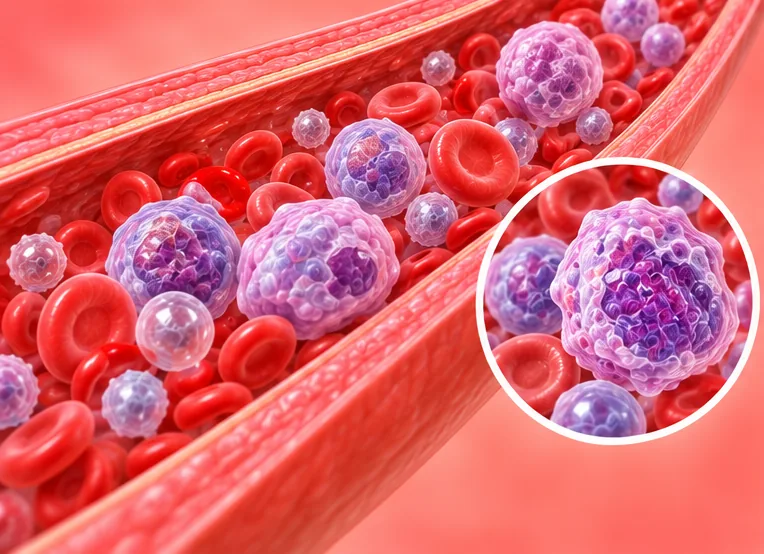

癌症与肿瘤
183 种疾病与症状
 中央型肺癌
中央型肺癌 乙状结肠癌
乙状结肠癌 乳腺导管瘤
乳腺导管瘤- 乳腺癌
- 乳腺肿瘤
 伯基特淋巴瘤
伯基特淋巴瘤 前列腺导管腺癌
前列腺导管腺癌- 前列腺小细胞癌
- 前列腺癌
 前列腺癌神经内分泌化
前列腺癌神经内分泌化 前列腺肉瘤
前列腺肉瘤- 前列腺腺癌
- 副乳癌变
- 十二指肠癌
- 印戒细胞癌
 卵巢癌
卵巢癌- 卵巢肿瘤
- 原位癌
- 原发性中枢神经系统淋巴瘤
 原发性肝癌
原发性肝癌 口腔癌
口腔癌 听神经瘤
听神经瘤- 周围型肺癌
- 唇癌
- 喉癌
 囊性肾癌
囊性肾癌- 垂体微腺瘤
- 垂体瘤
- 垂体腺瘤
 壶腹周围癌
壶腹周围癌- 外阴平滑肌肉瘤
 外阴癌
外阴癌- 外阴肿瘤

多发性骨髓瘤- 大肠癌
- 子宫内膜癌
- 子宫平滑肌肉瘤
- 子宫肉瘤
- 宫颈浸润癌
- 宫颈癌
- 宫颈癌前病变
 宫颈鳞状细胞癌
宫颈鳞状细胞癌- 小细胞肺癌
- 小肝癌
- 尤文肉瘤
- 急性单核细胞白血病
- 急性早幼粒细胞白血病
- 急性淋巴细胞白血病
- 急性白血病
- 急性髓系白血病
- 恶性淋巴瘤
- 恶性脑膜瘤
- 慢性淋巴细胞白血病
- 慢性白血病
- 慢性粒细胞白血病
- 扁桃体癌
- 星形细胞瘤
- 松果体细胞瘤
- 横纹肌肉瘤
- 气管肿瘤
- 浸润性乳腺癌
- 浸润性导管癌
- 淋巴母细胞淋巴瘤
- 淋巴瘤
- 淋巴细胞白血病
- 淋巴肿瘤
- 滑膜肉瘤
- 炎性乳腺癌
- 炎性肌纤维母细胞瘤
- 牙龈癌
- 生殖细胞瘤
- 甲状旁腺肿瘤
 甲状腺乳头状癌
甲状腺乳头状癌- 甲状腺癌
- 男性乳腺癌
- 畸胎瘤
- 白血病
- 皮肤鳞状细胞癌
- 直肠癌
- 直肠癌局部复发
 睾丸癌
睾丸癌- 睾丸肿瘤
- 神经内分泌肿瘤
- 神经鞘瘤
- 类癌
- 精原细胞瘤
- 纵隔肿瘤
- 绒毛膜癌
- 结肠癌
- 绝经后子宫内膜癌
- 继发性肝肿瘤
- 肉瘤
- 肛门周围癌
- 肝癌
- 肝肿瘤
- 肝门部胆管癌
- 肺癌
- 肺癌骨转移
- 肺腺癌
- 肺转移性肿瘤
- 肺鳞状细胞癌
 肾上腺肿瘤
肾上腺肿瘤- 肾淋巴瘤
- 肾癌
- 肾盂肿瘤
- 肾类癌
- 肾肉瘤
- 肾透明细胞癌
- 肾集合管癌
- 胃淋巴瘤
 胃癌
胃癌- 胃肠道间质瘤
- 胃部肿瘤
 胆囊癌
胆囊癌- 胆管癌
- 胆管肿瘤
 胰头癌
胰头癌- 胰岛细胞瘤
- 胰腺癌
- 胰腺肿瘤
- 胶质母细胞瘤
- 胶质瘤
- 胸壁肿瘤
- 胸腺瘤
- 胸腺癌
- 胸膜肿瘤
- 脂肪肉瘤
- 脊柱肿瘤
- 脊柱转移瘤
- 脐尿管癌
- 脑干肿瘤
- 脑干胶质瘤
- 脑瘤
- 脑膜瘤
- 脑转移瘤
- 腮腺肿瘤
 腹膜后肿瘤
腹膜后肿瘤- 腹部肿瘤
- 腺癌
- 膀胱原位癌
- 膀胱小细胞癌
- 膀胱尿路上皮癌
- 膀胱混合细胞癌
- 膀胱癌
- 膀胱肿瘤
- 膀胱腺癌
- 膀胱鳞状细胞癌
- 舌癌
- 良性肿瘤
- 血管网状细胞瘤
- 视神经胶质瘤
- 贲门癌
- 贲门肿瘤
- 转移性肾癌
- 转移性骨肿瘤
- 软骨瘤
- 输尿管癌
- 遗传性乳腺癌-卵巢癌综合征
- 遗传性卵巢癌
- 阑尾癌
- 阴茎癌
- 阴道癌
- 隆突性皮肤纤维肉瘤
- 霍奇金淋巴瘤
- 非小细胞肺癌
- 非霍奇金淋巴瘤
- 颅咽管瘤
- 颅底肿瘤
- 颅骨骨瘤
 食管癌
食管癌- 食管肿瘤
- 骨巨细胞瘤
- 骨恶性肿瘤
- 骨肉瘤
- 骨肿瘤
- 骨髓增生异常综合征
- 骨髓瘤
- 髓母细胞瘤
- 鳞状细胞癌
- 黑色素瘤
- 鼻咽癌
- 鼻窦癌
- 鼻腔癌